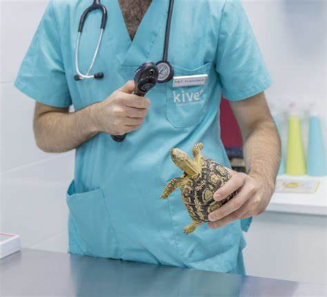
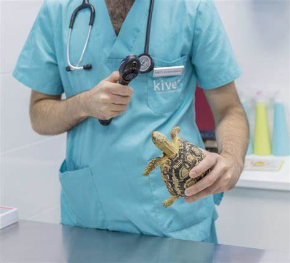
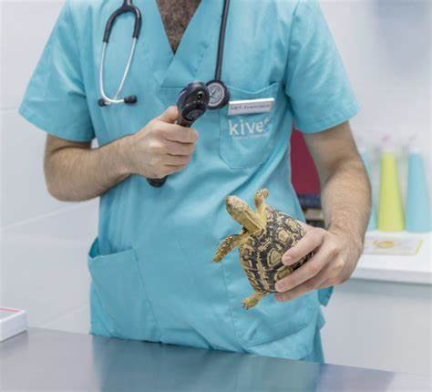

Aquí en Veterinaria del valle nos preocupamos por los alimentos que consumen sus mascotas, por lo cual ofrecemos un rico menú variado para las necesidades de sus mascotas, desde croquetas suplementos carne design hasta dos alimentos en bolsa y costales de alimento para aquellos que no tienen tiempo suficiente para recurrir al supermercado más cercano. Los alimentos para las mascotas varían desde la estatura, peso, raza, entre otros factores para que usted alimente correctamente a sus mascotas
Si tienes cachorros, polluelos y demás crías, puedes alimentarlas desde que son bebés y para eso tienes un selecto grupo de alimentos especializados para ellos así como aditamentos para que puedas realizar esta tarea con mayor facilidad
Veterinaria del valle cuenta un centro de estética para mascotas desde gatos, perros, aves y otros amigos para que puedes cuidar su pelaje, sus uñas, la integridad de su piel, así como erradicar parásitos, garrapatas y piojos para que tus mascotas vivan tranquilas y felices
Si tienes alguna mascota que requiera de alguna intervención quirúrgica, ya sea menor o mayor O una esterilización, aquí en veterinaria del Valle puedes contar con nosotros ya que ofrecemos un servicio de quirófano para sus mascotas.

10 años de experiencia en primer contacto y urgencias.
Especialista con historia laboral positiva en el hospital veterinario del Pedregal y el consultorio veterinario Kannes en Monterrey
Cirujano veterinario, con 10 años de experienciaa lo largo de la república.
Nuestra experta en cuidados estéticos con 15 años de experiencia